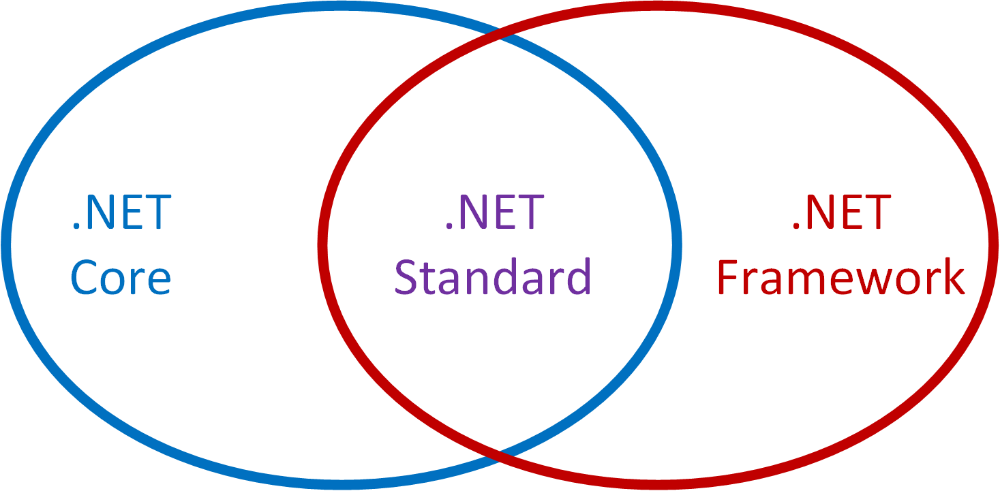

Opening Presents Early
Q# Tips and tricks for a Happy Hamiltonian

This is a post contributing to #QsAdvent 2018, check out all the others here!
We are approaching a day of the year where many will open presents from family and friends, after eating until they are uncomfortably full. I thought it would be fun to highlight some tips for working with Q# this holiday break, so you can work on designing quantum algorithms snuggled up by a fire (or at least a space heater if in the northern hemisphere). Some of these may be obvious to different folks, so if you already know then give yourself a pat on the back 😃. Also they are in no particular order other than the order in which they occurred to me while drinking some eggnog and enjoying some Christmas Cake from Smitha, Naomi, and @johnazariah! 🍒 🍰 🎄
Let’s just jump right in!
1. Easy ways to get new Q# projects started
Sometimes it can be daunting to setup new dev environments and start working with a new language. I had never done anything in .NET before learning Q#. As perennial as the IT help advice of turning things off and back on again is, looking at the docs for a new language can help you fast-track learning more than a random walk through StackExchange (though those are helpful too).
One thing I came across when going through the docs is the way you can use the .NET Core SDK from the command line to start a new project:
dotnet new console -lang Q# --output Teleport-Presents
If this doesn’t work for you, make sure you have the latest project templates installed:
dotnet new -i Microsoft.Quantum.ProjectTemplates::0.3.1811.2802-preview
While I love having GUI tools to do certain tasks, I ♥ it when I can script setup/initialization of tasks. (Things like Cookiecutter and personal dotfiles repos ftw.)
2. Cool editor integrations (+ some amazing @code features too!)
Disclaimer: I am an avid Visual Studio Code user ( Live Share and git integration 😍) and am using it with live markdown preview to write this post! I have to use lots of different IDEs for work that are often specially made for the embedded system’s language or just because it was how the project was set up. I was so happy to see some awesome Q# integrations to some of the most popular editors and IDEs, which means I can use some familiar tools and get a lot of creature comforts like IntelliSense for real-time feedback on errors. I have listed more links below, but if you use Visual Studio or Visual Studio Code definitely check out the integration for Q#
3. Project-local v. installing
One thing thing I have learned troubleshooting my own projects is how Q# projects manage installation of packages they need.
It turns out that Q# does things similar to the Pythonic paradigm of project environments (or many other similar implementations). A common experience one might have of ‘installing’ something is that you run an *.exe or similar and it does a bunch of often inscrutable things and then is in some app menu. This has a drawback though of if you need to manage multiple versions of something installed for different projects. If all the package files for a particular project are ‘installed’ locally in the project folder then it makes it easy to move things around and importantly you can have many projects on your system that are all independent from each other.
 _How .NET packages are managed, from creation to installation with
NuGet (figure used under MIT licence from https://docs.microsoft.com/en-us/nuget/what-is-nuget)_
_How .NET packages are managed, from creation to installation with
NuGet (figure used under MIT licence from https://docs.microsoft.com/en-us/nuget/what-is-nuget)_
All that they need in common is the .NET Core SDK which is installed in the more traditional system wide sense. Look here for more information about
installing the QDK or
managing project packages.
4. Contribution Guide (what repo should I PR on?)
So with the recent 0.3 release of the QDK there was a bit of a refactor of the GitHub repos. There are now a couple of different repos so I’ll summarize below what each has and what kind of pull requests (git for community contributions!) should go where.
| Repo | What can I find here? | What should I contribute here? |
|---|---|---|
| Quantum Libraries | Q# libraries for the Quantum Development Kit. These are the repos that have the source for libraries in the QDK like the canon and the chemistry ones. | Bug fixes, new features for the QDK, anything really that can improve the libraries! |
| Quantum | Microsoft Quantum Development Kit Samples | Do you have a cool example of an algorithm, or sample using the QDK libraries you want to share? This is the place! |
| QuantumKatas | Programming exercises for learning Q# and quantum computing | This collection of self-passed tutorials could use your notes, bug fixes, and additions to help the community grow! |
| Quantum-NC | Microsoft Quantum Computing Libraries for noncommercial use | Unfortunately, not open for contributions. |
5. Functions v. Operations
There are two concepts in the QDK that were a bit confusing to me at the start, but the difference is pretty clear now. Operations are how you get things done with your qubits, in that they are how you effect change in your system. Operations need not be quantum or interact with qubits, but the main property they have is that they do things. Examples of operations could be a rotation gate acting on a qubit, or rolling a classical die.
Functions on the other hand are meant to be more like the mathematical concept: a specification for a deterministic calculation or computation. An example of a function could be a polynomial like $x^2 + x-1$ or the trig function $\cos(x)$. Operations can involve/use functions, but functions can’t call operations because what operations do to the system can be non-deterministic.
Look here for more information about functions and operations.
6. A qubit value is NOT a state
One fundamental difference between quantum programing and classical programming is the nature of the information you are creating and manipulating. In many classical programing languages, we have the ability to debug programs by pausing them while they are running and inspecting values of variables at any time to try and sort out what your program is doing. We can’t exactly do the same with qubits. The very act of inspecting or measuring a qubit changes our qubits where as our classical debugging tools does not.
Now, if you are using a simulator backend to run your quantum program, it has to record things about what states a qubit could be in and in principle you could look at those values debugging something. However, this should never be relied on part of a quantum program, because you would not be able to do this inspection step without consequences on real hardware. The state of a qubit is not some inherent property of the system, but more of a formalism we have imposed to help us understand their behavior. There are other ways to debug quantum programs but like actual quantum algorithms they are different and interesting in their own right. (Let’s not open allllll of the presents early, after all.)
7. Don’t forget to clean up after your qubits!
There used to be a time when most programing languages required programmers to manually manage memory. Whether it is because you are trying to squeeze every last ounce of performance out of your hardware or that there is no support for memory management in your language, it adds some complexity to how we think about our programs. Quantum computers have a similar requirement to have information cleanup managed, but for slightly different reasons.
In a quantum computer, all operations must be reversible and thus cannot leak any information. (If information leaked in the forward direction, it would make it impossible to run in reverse!)
What this means is that when we use qubits for operations, we will need to make sure they end in the same state they started in to make sure we are able to reverse whatever our algorithm does.
In Q#, this has the consequence that we need to use the Reset and related functions to make sure our qubits end as they start, in the |0〉state (by convention).
How does Reset work you ask? It:
- measures the qubit in the $Z$ basis,
- then based on the measurement outcome (0 or 1 classical bit values) either does nothing or applies a quantum NOT gate (a.k.a. rotation by 180° about the $X$ axis)
Now if you have already measured your qubit doing a regular Reset or ResetAll is going to introduce some overhead because it does not know what your previous measurement results are. Thankfully if you know you are done with a qubit after you measure it, check out the MResetX, MResetY, and MResetZ functions (more info
here) which both measure your qubit for you and use that information to right away reset your qubit!
8. Tuple-in tuple-out
This one is pretty straightforward but basically there is no such thing as void as a return for any function or operation in Q#. You will always get a tuple return even if it’s an empty tuple.
For more information on the type system in Q# see here.
9. .NET what now?
Probably one the most common issues I see on forums and whatnot is installation problems with .NET Core SDK. This is understandable, I myself had to do some research on what the difference was between .NET Core, .NET Standard, and .NET Framework. Plus, each has an option to just install a runtime or a full SDK. The tl;dr is that .NET Framework is for Windows, while .NET Core is a cross-platform version of .NET — it’s not a strict subset of the functionality, but adds in a few nice things along the way. .NET Standard is the proper subset of both .NET Core and .NET Framework that works on all systems (see below figure).

The bottom line is that Q# is designed to only need the .NET Standard components, but that is not distributed separately from the other two .NET versions. So the install guide for Q# suggests to download and install the .NET Core SDK and then you will have the components you need from .NET Standard for use on either .NET Framework or .NET Core, as well as a more cross-platform SDK.
10. Is my computer a quantum computer now?
No, sadly installing the QDK will not magically turn your computer into a quantum computer. Nor will you be able to break RSA or run a quantum internet browser. You will have your same classical device but that can for the moment simulate small quantum systems and help you learn how to develop your own quantum algorithms! For more directly from the developers as to why they made Q# see their post here
Hopefully at least one of these tips will make a good stocking stuffer! I’ll finish out with some more links to online resources from ‘round the net where people are discussing, learning, and asking questions about Q#!
Also on social media use the tags #qsharp and #qsharpeningmyskills so all quantum programmers can help learn together 💖
Happy Hamiltonians and may you find your ground state in 2019! 🎁⛄❄🍷🎶💻
Sarah Kaiser
Community Maintainer
𝜋-thonista with PhD in Physics (quantum information) who loves to burn things w/ lasers 💖.